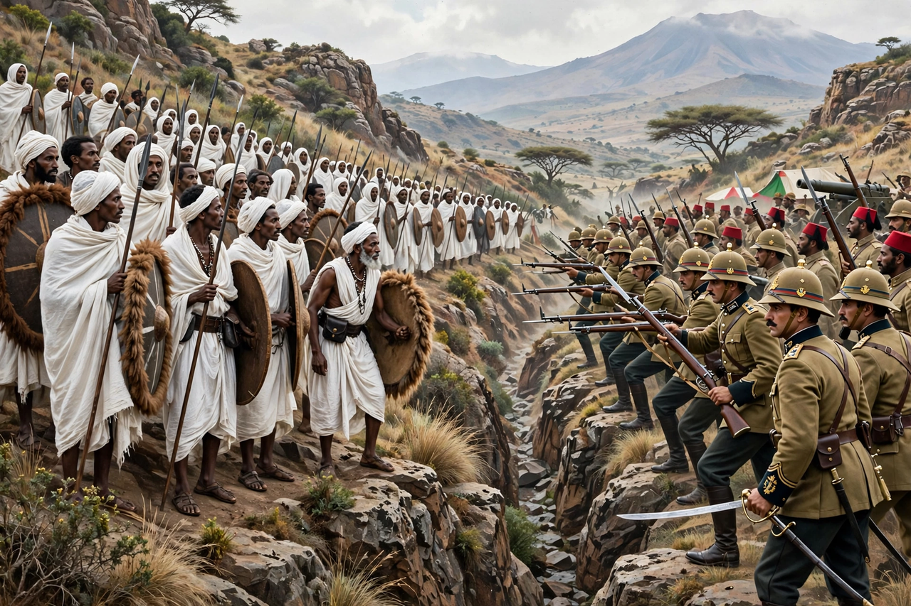

| First Italo-Ethiopian War | |
|---|---|
 | |
| Date | 15 December 1894 – 23 October 1896 |
| Location | Eritrea and northern Ethiopia |
| Result | Ethiopian victory; Treaty of Addis Ababa |
| Belligerents | Kingdom of Italy vs Ethiopian Empire |
| Commanders | Oreste Baratieri vs Emperor Menelik II |
The First Italo-Ethiopian War was fought between the Kingdom of Italy and the Ethiopian Empire from 1894 to 1896. It originated in a disputed interpretation of the 1889 Treaty of Wuchale, whose Italian text made Ethiopia an Italian protectorate while the Amharic text merely permitted Ethiopia to conduct foreign affairs through Italy. When Emperor Menelik II repudiated the treaty, Italy invaded from its colony of Eritrea.
After early Italian successes at Coatit and Senafe, Ethiopian forces destroyed an Italian column at Amba Alagi (December 1895) and forced the surrender of the garrison at Mekelle. The climax came on 1 March 1896 at the Battle of Adwa, where Menelik's army of some 100,000 men overwhelmed General Oreste Baratieri's advancing columns, killing around 6,000–7,000 Italian and askari troops in one of the heaviest defeats inflicted on a European colonial power in Africa.
The Treaty of Addis Ababa (October 1896) abrogated the Treaty of Wuchale and recognised Ethiopia's absolute independence, while Italy retained Eritrea. The defeat brought down Prime Minister Francesco Crispi. Adwa became a celebrated symbol of African resistance to colonialism, and Ethiopia — with Liberia — remained one of only two African states never formally colonised, until Italy's renewed invasion in the Second Italo-Ethiopian War of 1935–36.